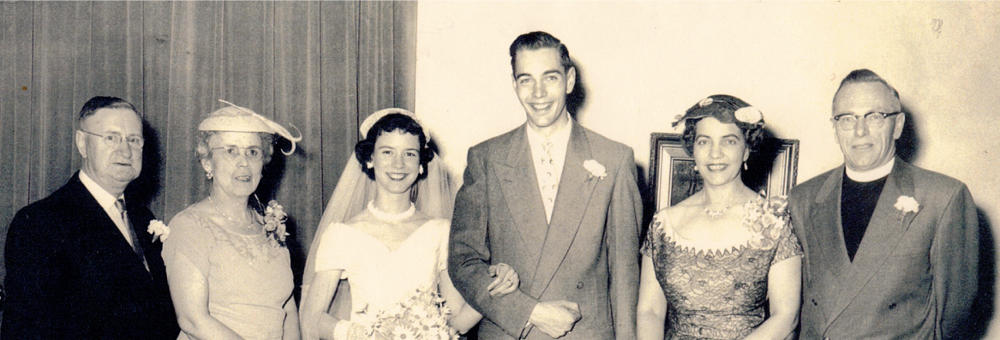

-1-MasterItem.svg)
Stories of Westminster United Church & its People / Page
147
was employed for many years in the administration of Carlton University. Don was
still a school-boy
who accompanied his parents to Toronto. He subsequently became a medical doctor
practicing his
profession in Guelph, Ontario. He still does. As for me, I graduated in law and
began my career as a
practicing lawyer by the time Allen and Mildred took their leave of Westminster.
The eight years spent in Winnipeg as minister at Westminster Church were
enjoyable years from
many stand-points. Allen served with distinction for about another decade as
minister of Kingsway
Lambton in Toronto, before his retirement. But Winnipeg was where the family
matured and began to
take their place as contributing citizens, and where grand-children made their
appearances with
frightening frequency. Winnipeg is where their hearts really stayed.
— with thanks to Charles Huband for this article. The picture above shows from
left:
Bert & Alma MacFarlane, Marilyn, Charles, and Mildred & Rev. Allen Huband.)
Table
of Contents

Rev. Allen R. Huband
Listen
Huband, a Palm Sunday sermon delivered at Kingsway-Lambton United Church
in Etobicoke ON:
Were you There?
Reader: Charles Huband